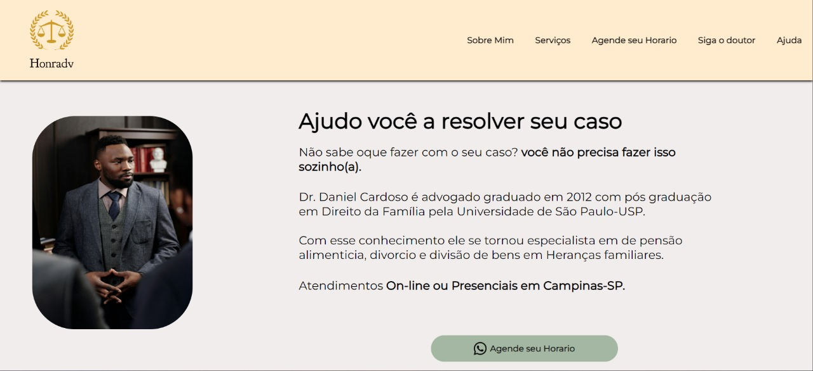

Meus Projetos
Conheça alguns dos meus projetos



Meu nome é Ramon e estou em uma jornada empolgante na área de desenvolvimento de software. Atualmente, estou cursando o terceiro período do curso de Análise e Desenvolvimento de Sistemas, onde tenho aprofundado meus conhecimentos e habilidades em programação e desenvolvimento de software.
Durante esse período, desenvolvi alguns projetos que destacam meu crescimento e dedicação. Abaixo estão alguns exemplos.
Além dos projetos, tenho me empenhado em aprender constantemente, aproveitando minhas horas vagas para estudar novas tecnologias e metodologias. Estou sempre em busca de oportunidades para aplicar meus conhecimentos e aprender mais. Utilizo muito plataformas de ensino como Udemy, Alura e Kah Academy.
Obrigado por visitar meu portifólio!
Conheça alguns dos meus projetos